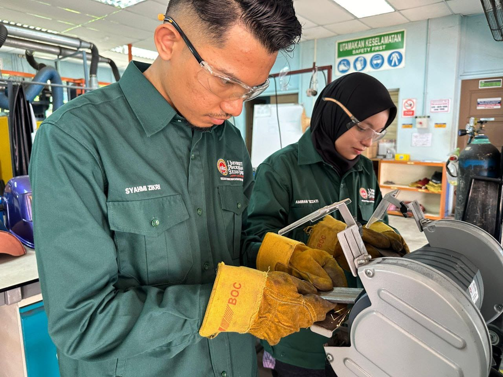
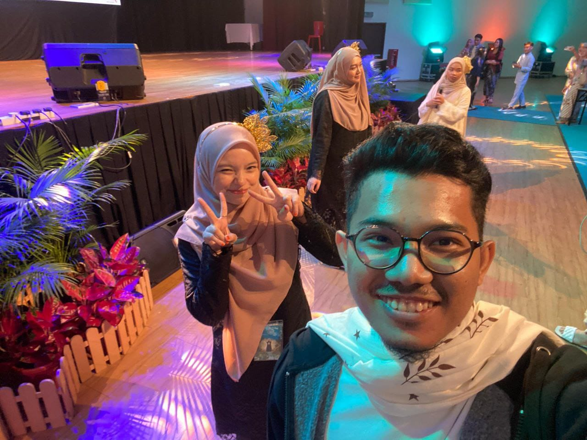

"Some people become memories.
And some memories become part of who we are."
Terima kasih dan Semoga baik-baik saja Tuan Puteri Kayangan ❤️

📅 Tarikh: Semester 3
📍 Lokasi: Bengkel Welding FTV
(Cari dan tekan 3 bintang bercahaya yang tersembunyi di sekitar kawasan ini)
"Dua-dua pro dalam bidang masing-masing."
(Tekan gambar untuk melihat cerita, dan kumpul 3 kepingan memori)

"Antara kenangan yang manis time ni"
Lihat kembali garis masa memori. Buka kesemua 3 kenangan.
Kenangan ditemui: 0 / 3
Kita telah sampai ke penghujung perjalanan.
Terima kasih kerana masih sudi melihat kembali cerita ini.
Ada satu perkara terakhir yang ingin aku sampaikan.
(Tekan Pintu Bercahaya)
(Tekan sampul surat untuk membuka)
Sejujurnya aku tak tahu nak cakap macam mana, sebab aku bukanlah orang yang pandai cakap banyak, tapi ni mungkin effort terakhir bagi aku untuk kau.
Aku tak tahu bagaimana masa akan membawa kita lepas ni, mungkin kita akan jumpa lagi, mungkin boleh jadi ini kali terakhir kita jumpa.
Tetapi aku nak kau tahu yang pernah ada sorang laki nama wafi yang SAYANG sangat kat kau cumanya tak reti nk bagitahu betul ii. Wafi dah cuba untuk try bagitahu mirah cuma takut nti kau jadi tak selesa dengan aku.
kalau ingt dulu time mirah demam tahun lepas, wafi ada bagi hadiah buah oren, handsock semua tu, memang bukan tiba ii, tapi memang sebab suka mirah la. cuma time tu risau nampak pelik plak tetiba confess kan.
Mungkin disitulah kekurangan yang ada pada wafi, dan wafi mintak maaf kalau ada ganggu mirah sebelum ni, sesungguhnya tiada niat lain selain dari hati yang tulus ikhlas.
Wafi tak bina platform ini untuk minta apa ii. Cuma nok royak (bagitahu) terima kasih atas segalanya dan menjadi sebahagian yang indah dekat UPSI ni.
Walaupon wafi sendiri pon tak pasti apa perasaan mirah kepada wafi, sebab wafi tahu wafi banyak kekurangannye. cuma apa pon tuan puteri rasa terhadap patik, patik relakan semuanya. 😊
Wafi harap apa sahaja jalan yang tuan puteri pilih selepas ini membawa kepada perkara-perkara yang baik, dijauhi orang yang nak sakitkan hati, dan sentiasa berjaya dan tabah menghadapi segala rintangan kehidupan.
Andai ini adalah kali terakhir kita jumpa.
Jaga Diri, Jaga Hati, Jaga Maruah.
Gudluck untuk LM dan ada rezeki kita jumpa lagi, tapi andai salah sorang antara kita dijemput ilahi. i just wanna say
I LOVE YOU SO MUCH
Bye. Assalamualaikum.
Muhammad Nor Wafi Bin Ghazali
Terima kasih dan Semoga baik-baik saja Tuan Puteri Kayangan ❤️
Deskripsi